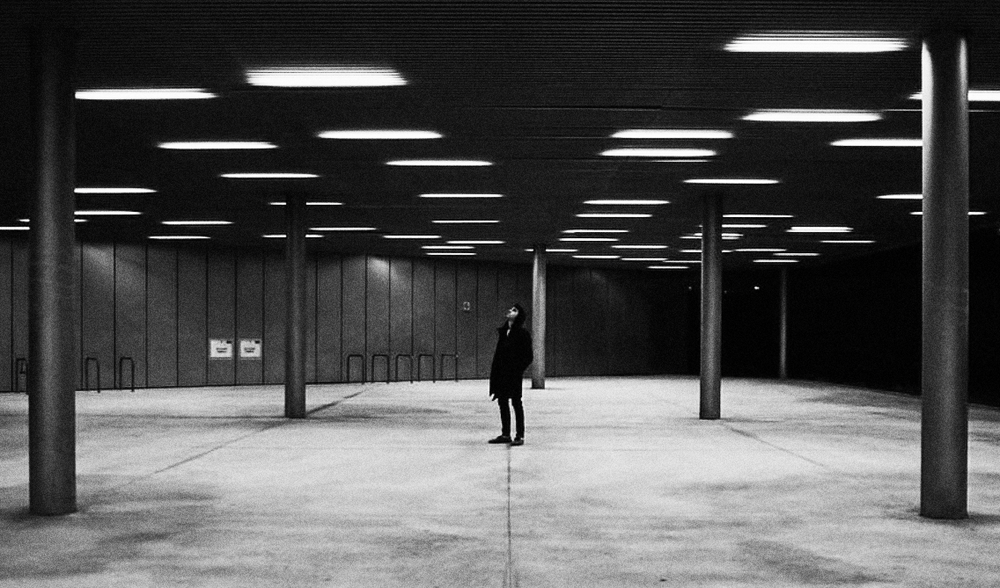

¡Hola gente de Norte!
↓
Mi nombre es Fernando Palacios, y soy un gestor de proyecto, productor,
diseñador gráfico y políglota de Zaragoza.
Os escribo porque me parecéis
una referencia en el campo de la producción audiovisual y creativa, y me
gustaría trabajar con vosotros.
†
quién soy:

A día de hoy he trabajado como director de proyecto en un festival de
cortos internacional (gestionando un equipo de 20 personas), y producido dos
documentales medioambientales (el segundo, actualmente en producción, sobre
la muerte de los Glaciares).
También he realizado cientos de
entrevistas, en diversos idiomas, a personas de todos los backgrounds
imaginables; y cubierto infinidad de puestos, desde coypwriter para la
India y Dinamarca, hasta barista en uno de los cafés más pijos de mi
ciudad.
Hace ya unos años, también me decidí a aprender los diez
idiomas más hablados del mundo (mas algunos de elección). De momento, ya
hablo inglés, español, francés, portugués, italiano y alemán; y ahora mismo,
estoy trabajando para mejorar mi japonés y ruso, además de haber
sentado algunas bases de árabe, chino e hindi.
†
qué ofrezco:

Mis servicios como parte de vuestro equipo podrían aplicarse en tres
focos principales:
La asistencia en producción, a través de todos aquellos trabajos de contacto, gestión y control de vuestros proyectos audiovisuales.
El diseño, tanto en su ámbito gráfico y conceptual, como de organización de contenidos.
Y la
gestión de proyecto, en cuanto al seguimiento de objetivos, la gestión de
equipos, documentación y promociones gráficas.
†
qué busco:

Las principal razón de que me ponga en contacto con vosotrxs es vuestro afán innovador, y vuestra intención de ofrecer posibilidades audiovisuales que vayan más allá de lo convencional.
Me gustaría poder realizar proyectos como el que vosotros desarrollasteis
para la BSM y Morillas: proyectos que vayan más allá de un simple producto visual, y que intenten
presentar visiones que representen el alma de la empresa.
†
citas:

“valiente y atrevido.
el empleado salvavidas.”
Miriam Redondo,
Jefa de Equipo
“consigue resultados,
incluso con pronósticos
en su contra.
Liliya Kucheva,
Festival Manager
“siempre práctico,
y sin embargo, siempre
optando a la excelencia.”
Adrian San Román,
Director de Fotografía
“la persona más creativa
que he conocido nunca.”
Diego López,
Actor y Regidor
† últimos pasos:
A partir de aquí, podéis echarle un vistazo a mi web, donde encontraréis
algunos ejemplos de mi trabajo.
También podéis mandarme un correo, o llamarme en cualquier momento: 670416037.
Si os ha gustado mi perfil,
estaría encantado de pasarme por vuestras oficinas a tomarme un café y
considerar la posibilidad de trabajar juntos.
¿Qué os parece?
¿Hablamos?
Gracias por vuestra atención.